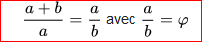
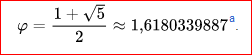
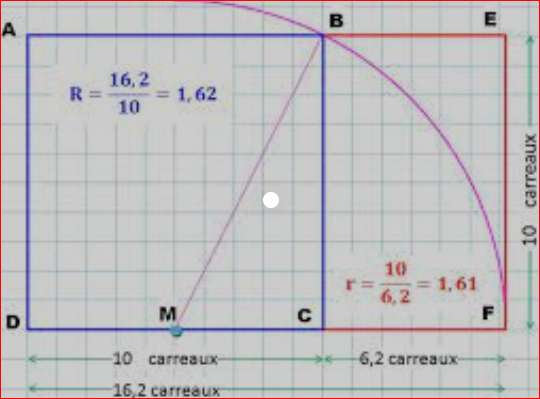
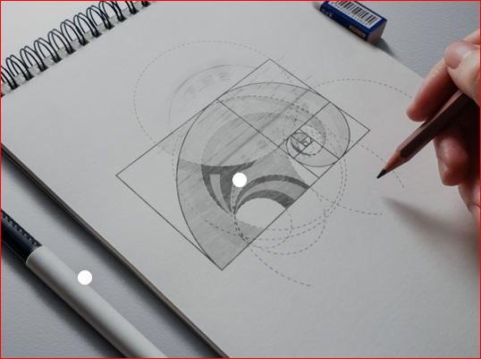
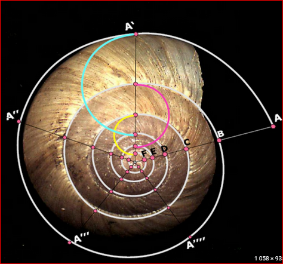

oumayma bakir
B0201
Nombre d'or
Le nombre d'or (ou section dorée, proportion dorée, ou encore divine proportion) est une proportion,
définie initialement en géométrie comme l'unique rapport a/b entre deux longueurs a et b telles que le rapport de
la somme a + b des deux longueurssur la plus grande (a) soit égal à celui de la plus grande (a) sur la plus petite (b),
ce qui s'écrit :

Le découpage d'un segment en deux longueurs vérifiant cette propriété est appelé par Euclide découpage en « extrême et moyenne raison ».
Le nombre d'or est maintenant souvent désigné par la lettre φ ou φ \varphi (phi), et il est lié à l'angle d'or.
Ce nombre irrationnel est l'unique solution positive de l'équation φ \varphi 2 = φ \varphi + 1. Il vaut :

Il intervient dans la construction du pentagone régulier. Ses propriétés algébriques le lient à la suite de Fibonacci et au corps quadratique ℚ(√5).
Le nombre d'or s'observe aussi dans la nature (quelques phyllotaxies, par exemple chez les capitules du tournesol, pavage de Penrose de quasi-cristaux) ou dans quelques œuvres et monuments (architecture de Le Corbusier, musique de Xenakis, peinture de Dalí).
L'histoire de cette proportion commence à une période de l'Antiquité qui n'est pas connue avec certitude ; la première mention connue de la division en extrême et moyenne raison apparaît dans les Éléments d'Euclide. À la Renaissance, Luca Pacioli, un moine franciscain italien, la met à l'honneur dans un manuel de mathématiques et la surnomme « divine proportion » en l'associant à un idéal envoyé du ciel. Cette vision se développe et s'enrichit d'une dimension esthétique, principalement au cours des XIXe et XXe siècles où naissent les termes de « section dorée » et de « nombre d'or ».
Il est érigé en théorie esthétique et justifié par des arguments d'ordre mystique, comme une clé importante, voire explicative, dans la compréhension des structures du monde physique, particulièrement pour les critères de beauté et surtout d'harmonie ; sa présence est alors revendiquée dans les sciences de la nature et de la vie, proportions du corps humain ou dans les arts comme la peinture, l'architecture ou la musique. Certains artistes, tels le compositeur Xenakis ou le poète Paul Valéry ont adhéré à une partie de cette vision, soutenue par des livres populaires. À travers la médecine, l'archéologie ou les sciences de la nature et de la vie,
la science infirme les théories de cette nature car elles sont fondées sur des généralisations abusives et des hypothèses inexactes.
quelques photos qui fonctionne et explique le nombre d'or:

Nombre d'or - ce qu'il faut savoir en bref

